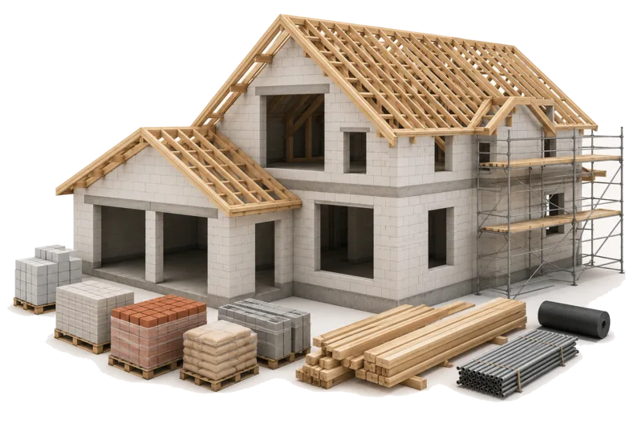
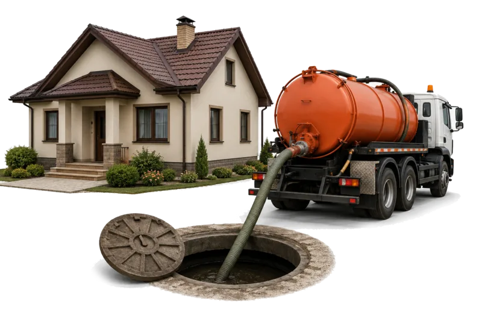
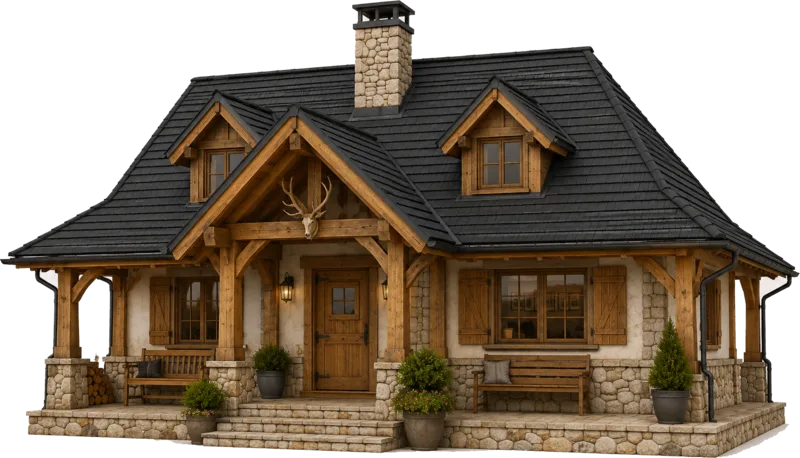
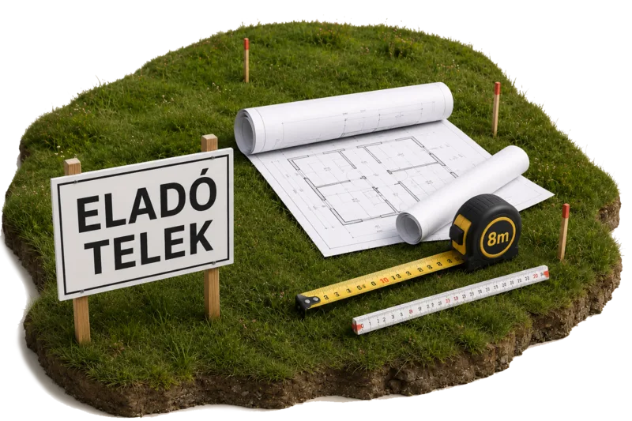

Építkezés csatorna nélküli telken
A szennyvízkezelést már a tervezésnél érdemes tisztázni: hová kerül a berendezés, milyen mélyen jön ki a cső, hová megy a kezelt víz, és milyen engedélyezési feltételek vonatkoznak a telekre.
Építkezés előtt állokKiinduló helyzet

A szennyvízkezelést már a tervezésnél érdemes tisztázni: hová kerül a berendezés, milyen mélyen jön ki a cső, hová megy a kezelt víz, és milyen engedélyezési feltételek vonatkoznak a telekre.
Építkezés előtt állok
Ilyenkor nem az új rendszer az egyetlen kérdés. Azt is tisztázni kell, mi történik a meglévő emésztővel, hogyan zajlik az átállás, és mikortól szűnik meg a szippantás.
Emésztőt váltanék ki
A ritkább használat gyakran más technológiát kíván, mint egy állandó lakóház. Itt különösen fontos a várható terhelés és az áramellátás tisztázása.
Nyaralóhoz keresek megoldást
Döntés előtt érdemes megtudni, milyen szennyvízkezelés engedélyezhető az adott telken, és milyen feltételekkel.
Telekvásárlás előtt tájékozódomTechnológiák
Csatorna nélküli ingatlannál többféle rendszer kerülhet szóba, de ezek nem ugyanazt végzik.
A zárt tároló gyűjt. Nem kezeli, csak tárolja a szennyvizet a következő szippantásig. Áramot nem igényel, viszont rendszeres szippantást igen — ehhez a szippantóautónak hozzá kell férnie a tartályhoz. Kezelt víz nem keletkezik, mert a rendszert semmi nem hagyja el a szippantáson kívül. Ott van a helye, ahol a helyi adottságok semmilyen talajba jutást nem engednek, és más megoldás nem lehetséges.
Az oldómedence ülepít és részlegesen kezel. Gravitációsan, áram nélkül működik. A szennyvíz előtisztítása a medencében történik, a tényleges tisztulás nagyrészt a szikkasztómezőben, a talajban zajlik — ezért az oldómedence szikkasztóképes talajt kíván. Karbantartást igényel: rendszeres szippantást és a baktériumkultúra fenntartásához időszakos adalékolást.
A biológiai szennyvíztisztító ténylegesen tisztít. A tartályban élő baktériumkultúra lebontja a szennyvíz szerves anyagát, a folyamat végén tisztított víz távozik, amely elszivárogtatható és gyökérzónás hasznosításra alkalmas. Ehhez viszont áramellátás és rendszeres terhelés szükséges.
| Zárt tároló | Oldómedence | Biológiai szennyvíztisztító | |
|---|---|---|---|
| Mit csinál | Gyűjt | Ülepít | Tisztít |
| Szippantás | Rendszeresen | Kétévente | Nem szükséges |
| Áramigény | Nincs | Nincs | Van (egy kompresszor) |
| Kezelt víz | Nincs | Részlegesen kezelt | Elszivárogtatható, öntözésre alkalmas |
| Mikor jöhet szóba | Ha más nem lehetséges | Időszakos használatnál, áram nélküli helyen | Állandó használatnál |

Nyaralóhoz, hétvégi házhoz, ahol nincs folyamatos terhelés vagy áramellátás. Gravitációs, áram nélküli megoldás; körülbelül kétévente szippantást és rendszeres baktériumfrissítést igényel.

Állandó használatú családi házakhoz és kisebb létesítményekhez, 1–50 fős kapacitásig. Szabadalmaztatott iszapzsákos technológiával, szippantás nélkül.
Mindkettőt mi gyártjuk. Az ajánlatunkban ezért mindig a használat és a telek adottságai döntenek, nem a termékkategória.
Megoldásaink
Saját fejlesztésű, Magyarországon gyártott rendszerek — a családi háztól az intézményi kapacitásig.
Melyik illik az Ön helyzetéhez, azt a használat és a telek adottságai döntik el, konzultáció után.

Állandó használatú családi házakhoz és kisebb létesítményekhez, 1–50 fős kapacitásig. Szabadalmaztatott iszapzsákos technológiával, szippantás nélkül.
Tovább
Nagyobb kapacitásra: intézmények, üzemek, közösségek és településrészek. Referenciáink között szerepel Bakonypéterd négy darab 50 fős berendezésből álló, közműszolgáltató által üzemeltetett telepe is.
Tovább
Nyaralóhoz, hétvégi házhoz, ahol nincs folyamatos terhelés vagy áramellátás. Gravitációs megoldás, körülbelül kétévente szippantással.
Tovább
Egyszerűbb, stabilabb üzemeltetés, szippantás nélkül, komposztálható iszappal. Több országban szabadalmaztatott saját fejlesztésünk.
Tovább